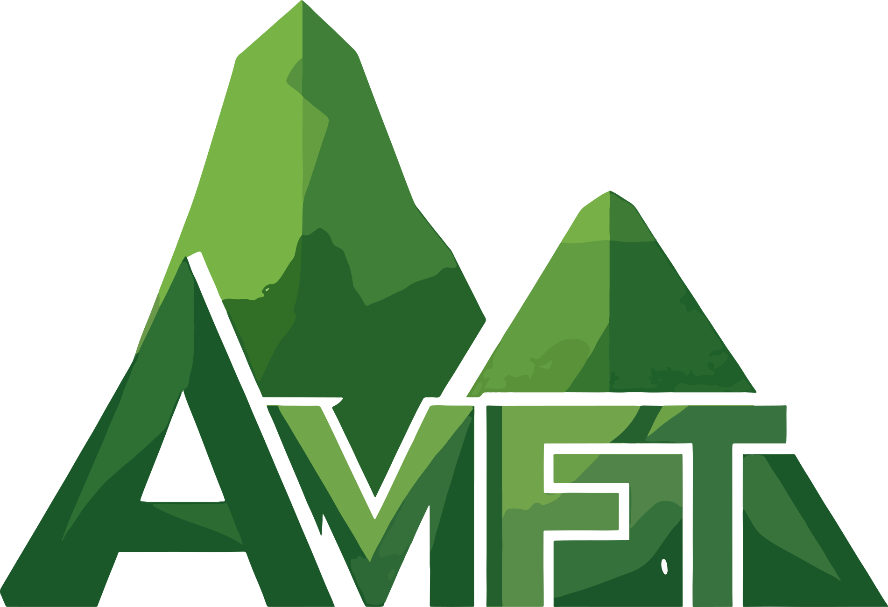

Galería Fotográfica
Descubre la belleza de los cerros Fura y Tena a través de nuestras fotografías

"Maravilla natural, tesoro ancestral de mitología y leyenda"
Descubre nuestros servicios <<<<<<< HEADDescubre las experiencias únicas que tenemos para ti
Disfruta de vistas espectaculares a los majestuosos cerros Fura y Tena, dos monumentos naturales que dominan el paisaje local. Ofrecemos miradores estratégicamente ubicados para capturar las mejores fotografías y experiencias visuales.
Brinda espacios para vivir y gozar a plenitud la naturaleza, contemplar los majestuosos y emblemáticos cerros de Fura y Tena como lugar de veneración, espiritualidad, leyenda y mitología de nuestros aborígenes y coterráneos. Se crea conciencia sobre la importancia de los espacios para respirar aire puro, escuchar melodías de gran variedad de aves, apreciar mariposas de múltiples colores y demás especies de fauna tropical. Se valora y enseña la importancia de cosechar agua, la armonía de la vida y se exalta la cultura campesina.
Ofrecer satisfactoriamente a nuestros turistas y visitantes, la mejor panorámica de los majestuosos cerros de Fura y Tena, su mitología y leyenda; hospedaje rural en Ranchería los Topitos, museo campesino, galería temática a la esmeralda, caminatas ecológicas, Peña del Corazón Encantado, Cascada el Baño de los Abuelos, Charco la Moya; gastronomía típica y prácticas en sostenibilidad ambiental.
Para el 2035 seremos un referente por excelencia para Boyacá, Colombia y el Mundo como un destino ecoturístico, con prácticas sustentables y sostenibles con el medio ambiente. Espacio innovador para vivir y gozar a plenitud de la naturaleza, contemplar los majestuosos y emblemáticos cerros de Fura y Tena lugar de cultos y rituales de nuestros aborígenes y coterráneos garantizando plena atención a nuestros turistas y visitantes.
Magia Fura y Tena nació del profundo amor por nuestra tierra y sus leyendas ancestrales. Inspirados por las historias de nuestros abuelos sobre los cerros gemelos Fura y Tena, creamos este proyecto para compartir la magia de este lugar único con el mundo.
Desde 2015, hemos trabajado con las comunidades locales para desarrollar experiencias turísticas responsables que respeten el entorno y enriquezcan a nuestros visitantes.
>>>>>>> bcaf3967527d6f5b9f523d53a61c5797f14e9d6eDescubre la belleza de los cerros Fura y Tena a través de nuestras fotografías
Selecciona un video de la galería para reproducirlo
Sentido de admiración por la naturaleza y respeto al entorno.
Ropa de clima caliente (manga larga) y calzado para caminar.
Obligatorio: Uso de medias o calzado para el Baño de los Abuelos y Charco La Moya.
Usa cubrecabezas, bloqueador solar, gafas de sol y repelente.
La basura hace parte de tu equipaje. ¡No la arrojes!
Mantente hidratado y ten disposición para caminar.
Toma la vía pavimentada Pauna - Borbur. Al llegar al Km 11 (Sitio Paja Blanca), desvía a la derecha y recorre 5 km por la vía de la Vereda Topito y Quibuco. ¡Sigue nuestra señalización!
+57 313 210 7889
omarcpauna@gmail.com
Lunes a Domingo: 8:00 AM - 6:00 PM